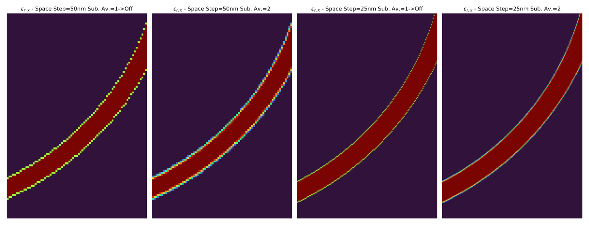
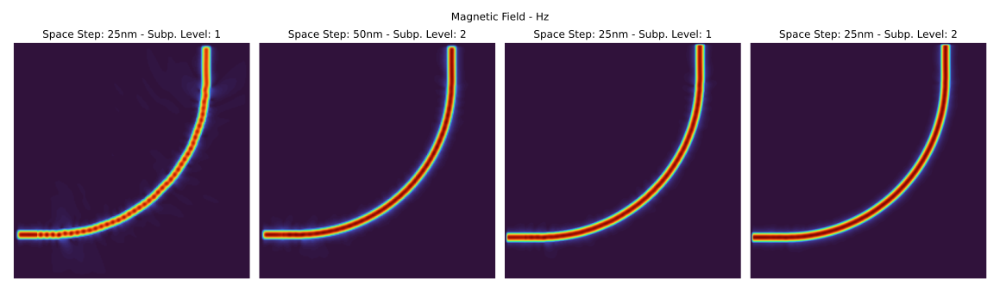
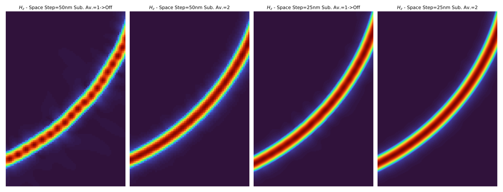

Finite-Difference Time-Domain (FDTD) Electromagnetic Solver
Based on:
A. Z. Elsherbeni, V. Demir, “The Finite-Difference Time-Domain Method for Electromagnetics with MATLAB® Simulations”, 2nd Edition, SciTech Publishing, 2015. ISBN: 9781613531754
Susan C. Hagness, Allen Taflove, “Computational Electrodynamics: The Finite-Difference Time-Domain Method”, 3rd Edition, Artech House, 2005. ISBN: 9781580538329
Overview
This solver implements the Finite-Difference Time-Domain (FDTD) method for solving Maxwell’s equations in time and space, specifically optimized for the simulation of integrated photonic devices. The implementation is grounded in the foundational works by Taflove, Hagness, Elsherbeni, and Demir, and adapts their rigorous mathematical formulation to a highly automated and scalable simulation environment.
It supports linear, isotropic, non-dispersive materials and provides advanced features tailored to photonic circuit design, such as automatic mode injection, port detection, and S-parameter extraction.
Key Features
Time-domain Maxwell solver using second-order central difference in both time and space.
Perfectly Matched Layer (CPML) boundary conditions for accurate open-region simulations (as per Elsherbeni and Demir).
GDSII Integration: Reads standard GDS layout files to define device geometry.
Port Identification & Mode Matching: - Automatic port detection and classification. - Single-mode excitation using computed eigenmodes. - Mode solver integration for accurate injection and extraction.
S-Parameter Computation: - Computes scattering parameters (S-matrix) from time-domain data. - Automatically exports results in standard .sNp format.
HDF5 Output: - All simulation data, field snapshots, and metadata are stored in .h5 format for efficient post-processing.
Mathematical Foundation
The FDTD method discretizes Maxwell’s curl equations using a Yee grid:
In linear, non-dispersive, and isotropic media, we use:
Time stepping is performed using a leapfrog scheme:
Update magnetic field \(\mathbf{H}\) at half-integer time steps.
Update electric field \(\mathbf{E}\) at integer time steps.
Boundary Conditions
This solver supports Convolutional Perfectly Matched Layer (CPML) absorbing boundary conditions, as described in Chapter 8 of Elsherbeni & Demir. CPML is used to prevent artificial reflections at simulation domain boundaries.
Applications
This solver is particularly suited for:
Silicon photonics and integrated optical circuits
Passive photonic devices (e.g., splitters, multiplexers, filters)
Waveguide tapering, crossings, and junctions
File Output
The results of the simulation are save into two data files and are also available using a results object in python that facilitates data analysis and visualization:
HDF5 (`.hdf5`): Complete simulation datasets, fields, and diagnostics.
Touchstone (`.snp`): Scattering parameters in industry-standard format for N-port devices.
FDTDSimResults: A python object that facilitates results navigation (support toNXdata).
Examples
Checking Solver Global Units
Whenever starting a simulation, it is good to confirm the solver global units.
For convenience the pyFDTDSolver provides the
GetGlobalUnits method that presents
the solver settings:
from pyFDTDKernel.pyFDTDSolver import pyFDTDSolver
solver = pyFDTDSolver()
units = solver.GetGlobalUnits(print_units=True)
90 Degree Bend - Subpixel Averaging
This examples shows the effect using subpixel averaging on a 90 degree bend (bend90.gds):
{kind=link}
The simulation setup in the code snippet below. It sets four different simulation settings, by changing the space step from 50 nm to 25 nm while varying the subpixel_level from 1 (off) to 2.
from pyOptiShared.DeviceGeometry import DeviceGeometry
from pyOptiShared.LayerInfo import LayerStack
from pyOptiShared.Material import ConstMaterial
from pyFDTDKernel.pyFDTDSolver import pyFDTDSolver
# Material Settings
si02_mat = ConstMaterial(mat_name="SiO2", epsReal=1.45**2,color='lightgreen')
si_mat = ConstMaterial(mat_name="Si", epsReal=3.5**2,color='lightblue')
air_mat = ConstMaterial(mat_name="Air", epsReal=1**2,color='lightyellow')
# Layer Stack Settings
layer_stack = LayerStack()
layer_stack.addLayer(name="L1", number=1, thickness=0.22, zmin=0.0,
material=si_mat, cladding=si02_mat,
sideWallAng=0)
layer_stack.setBGandSub(background=si02_mat, substrate=si02_mat)
layer_stack.Show()
#Device Geometry Settings
device_geometry = DeviceGeometry()
device_geometry.SetSettings(
layer_stack=layer_stack,
geometry_type="Fixed",
gds_file='bend90.gds',
buffers={'x':1.5,'y':1.5,'z':1.5}
)
device_geometry.SetAutoPortSettings(direction='both',buffer=1,min=[0.45,0.45],max=[0.55,0.55])
device_geometry.Show()
# Simulation Settings and Runs
lmin = 1.5
lmax = 1.6
lcen = (lmax+lmin)/2
npts=21
tfinal = 1500
fdtd_solver = pyFDTDSolver()
fdtd_solver.SetPorts(profile="gaussian-pw", lcenter=lcen, lmin=lmin, lmax=lmax, npts=npts, mode_indices=0,,symmetries='1x1')
fdtd_solver.AddDFTMonitor(mon_type="2d-z-normal", z0=0.11, name="MyDFTMonitor1",
lmin=lmin, lmax=lmax,npts=npts,
save_ex=True, save_ey=True, save_ez=True,
save_hx=True, save_hy=True, save_hz=True)
fdtd_solver.SetSimSettings(sim_time=tfinal, space_step=0.050, subpixel_level=1, save_path=r"results",results_filename='bend90_spx_1_50nm',
device_geometry = device_geometry,export_mat_grid=True)
fdtd_solver.Run()
fdtd_solver.SetSimSettings(sim_time=tfinal, space_step=0.050, subpixel_level=2, save_path=r"results",results_filename='bend90_spx_2_50nm',
device_geometry = device_geometry,export_mat_grid=True)
fdtd_solver.Run()
fdtd_solver.SetSimSettings(sim_time=tfinal, space_step=0.025, subpixel_level=1, save_path=r"results",results_filename='bend90_spx_1_25nm',
device_geometry = device_geometry,export_mat_grid=True)
fdtd_solver.Run()
fdtd_solver.SetSimSettings(sim_time=tfinal, space_step=0.025, subpixel_level=2, save_path=r"results",results_filename='bend90_spx_2_25nm',
device_geometry = device_geometry,export_mat_grid=True)
fdtd_solver.Run()
The post processing part consists of loading the HDF5 results file into the FDTDSimResults
objects and then using matplotlib for visualization of the data. The code is available in the following folded section.
Post Processing Code
import matplotlib.pyplot as plt
import numpy as np
import mpld3
from pyOptiShared.SimResults import FDTDSimResults
# Plotting Options
my_cmap = 'turbo' # For Colormap selection
save_svg = True # Save figure in SVG format
save_html = True # Uses mpld3 and export figure to HTML
# Load the Results Files
results_spx1 = FDTDSimResults()
results_spx1.loadHDF5('results/bend90_spx_1_50nm.hdf5')
results_spx2 = FDTDSimResults()
results_spx2.loadHDF5('results/bend90_spx_2_50nm.hdf5')
results_spx3 = FDTDSimResults()
results_spx3.loadHDF5('results/bend90_spx_1_25nm.hdf5')
results_spx4 = FDTDSimResults()
results_spx4.loadHDF5('results/bend90_spx_2_25nm.hdf5')
# Get the Material Cross sections
mat_grd_spx1 = results_spx1.permittivity.Get('EPS_X')[:,:,40].transpose()
mat_grd_spx2 = results_spx2.permittivity.Get('EPS_X')[:,:,40].transpose()
mat_grd_spx3 = results_spx3.permittivity.Get('EPS_X')[:,:,73].transpose()
mat_grd_spx4 = results_spx4.permittivity.Get('EPS_X')[:,:,73].transpose()
# Get the Fields
Hz_spx1 = results_spx1.runs[0].dftmonitors['MyDFTMonitor1'].Get('Hz')
Hz_spx2 = results_spx2.runs[0].dftmonitors['MyDFTMonitor1'].Get('Hz')
Hz_spx3 = results_spx3.runs[0].dftmonitors['MyDFTMonitor1'].Get('Hz')
Hz_spx4 = results_spx4.runs[0].dftmonitors['MyDFTMonitor1'].Get('Hz')
Hz_cs1 = Hz_spx1[11,:,:].transpose()
Hz_cs2 = Hz_spx2[11,:,:].transpose()
Hz_cs3 = Hz_spx3[11,:,:].transpose()
Hz_cs4 = Hz_spx4[11,:,:].transpose()
# General Plot Settings
def set_plot_settings(ax: plt.Axes, title:str=None) -> None:
ax.set_title(title)
ax.set_aspect('equal')
ax.grid(False)
ax.axis('off')
# HTML Saving Routine
def export_html(fig:plt.Figure, filename:str) -> None:
html_str = mpld3.fig_to_html(fig)
with open(filename+".html", "w") as f:
f.write(html_str)
# Field Comparison Plots
fig = plt.figure(figsize=(16,5))
ax = plt.subplot(1,4,1)
ax.imshow(np.abs(Hz_cs1),origin='lower',cmap=my_cmap)
set_plot_settings(ax,"Space Step: 25nm - Subp. Level: 1")
ax = plt.subplot(1,4,2)
ax.imshow(np.abs(Hz_cs2),origin='lower',cmap=my_cmap)
set_plot_settings(ax,"Space Step: 50nm - Subp. Level: 2")
ax = plt.subplot(1,4,3)
ax.imshow(np.abs(Hz_cs3),origin='lower',cmap=my_cmap)
set_plot_settings(ax,"Space Step: 25nm - Subp. Level: 1")
ax = plt.subplot(1,4,4)
ax.imshow(np.abs(Hz_cs4),origin='lower',cmap=my_cmap)
set_plot_settings(ax,"Space Step: 25nm - Subp. Level: 2")
plt.tight_layout()
plt.suptitle("Magnetic Field - Hz")
if save_svg: plt.savefig('subpixel_Hz.svg',bbox_inches='tight', pad_inches=0.2)
if save_html: export_html(fig, "subpixel_Hz")
# Field Comparison Plots - Zoomed
fig = plt.figure(figsize=(18,7))
ax = plt.subplot(1,4,1)
ax.imshow(np.abs(Hz_cs1[40:150,100:175]),origin='lower',cmap=my_cmap)
set_plot_settings(ax,"$H_z$ - Space Step=50nm Sub. Av.=1->Off")
ax = plt.subplot(1,4,2)
ax.imshow(np.abs(Hz_cs2[40:150,100:175]),origin='lower',cmap=my_cmap)
set_plot_settings(ax,"$H_z$ - Space Step=50nm Sub. Av.=2")
ax = plt.subplot(1,4,3)
ax.imshow(np.abs(Hz_cs3[80:300,200:350]),origin='lower',cmap=my_cmap)
set_plot_settings(ax,"$H_z$ - Space Step=25nm Sub. Av.=1->Off")
ax = plt.subplot(1,4,4)
ax.imshow(np.abs(Hz_cs4[80:300,200:350]),origin='lower',cmap=my_cmap)
set_plot_settings(ax,"$H_z$ - Space Step=25nm Sub. Av.=2")
plt.tight_layout()
if save_svg: plt.savefig('subpixel_Hz_zoomed.svg',bbox_inches='tight', pad_inches=0.2)
if save_html: export_html(fig, "subpixel_Hz_zoomed")
# Material Comparison Plots - Zoomed
fig = plt.figure(figsize=(18,7))
ax = plt.subplot(1,4,1)
ax.imshow(np.real(mat_grd_spx1[40:150,100:175]),origin='lower',cmap=my_cmap)
set_plot_settings(ax,"$\epsilon_{r,x}$ - Space Step=50nm Sub. Av.=1->Off")
ax = plt.subplot(1,4,2)
ax.imshow(np.real(mat_grd_spx2[40:150,100:175]),origin='lower',cmap=my_cmap)
set_plot_settings(ax,"$\epsilon_{r,x}$ - Space Step=50nm Sub. Av.=2")
ax = plt.subplot(1,4,3)
ax.imshow(np.real(mat_grd_spx3[80:300,200:350]),origin='lower',cmap=my_cmap)
set_plot_settings(ax,"$\epsilon_{r,x}$ - Space Step=25nm Sub. Av.=1->Off")
ax = plt.subplot(1,4,4)
ax.imshow(np.real(mat_grd_spx4[80:300,200:350]),origin='lower',cmap=my_cmap)
set_plot_settings(ax,"$\epsilon_{r,x}$ - Space Step=25nm Sub. Av.=2")
plt.tight_layout()
if save_svg: plt.savefig('subpixel_epsx_zoomed.svg',bbox_inches='tight', pad_inches=0.2)
if save_html: export_html(fig, "subpixel_epsx_zoomed")
# Get Wavelength and S21 Data
lam = abs(results_spx1.sparameters['S21'].Get('wavelength'))
# Get SParameter Data - S21 - Tranmission
s21_spx1 = results_spx1.sparameters['S21'].Get('data')
s21_spx2 = results_spx2.sparameters['S21'].Get('data')
s21_spx3 = results_spx3.sparameters['S21'].Get('data')
s21_spx4 = results_spx4.sparameters['S21'].Get('data')
# Plot Transmittance - |S21|^2
fig = plt.figure()
fig.suptitle('Transmittance - $|S_{21}|^2$')
plt.plot(lam,abs(s21_spx1)**2,label="Space Step=50nm Sub. Av.=1->Off",linestyle='--')
plt.plot(lam,abs(s21_spx2)**2,label="Space Step=50nm Sub. Av.=2",linestyle='--')
plt.plot(lam,abs(s21_spx3)**2,label="Space Step=25nm Sub. Av.=1->Off")
plt.plot(lam,abs(s21_spx4)**2,label="Space Step=25nm Sub. Av.=2")
plt.xlabel('Wavelength (um)')
plt.ylabel('Amplitude')
plt.legend(loc="center right")
if save_svg: plt.savefig('subpixel_s21.svg',bbox_inches='tight', pad_inches=0.2)
if save_html: export_html(fig, "subpixel_s21")
# Get SParameter Data - S11 - Reflection
s11_spx1 = results_spx1.sparameters['S11'].Get('data')
s11_spx2 = results_spx2.sparameters['S11'].Get('data')
s11_spx3 = results_spx3.sparameters['S11'].Get('data')
s11_spx4 = results_spx4.sparameters['S11'].Get('data')
# Plot Reflectance - |S11|^2
fig = plt.figure()
fig.suptitle('Reflectance - $|S_{11}|^2$')
plt.plot(lam,abs(s11_spx1)**2,label="Space Step=50nm Sub. Av.=1->Off",linestyle='--')
plt.plot(lam,abs(s11_spx2)**2,label="Space Step=50nm Sub. Av.=2",linestyle='--')
plt.plot(lam,abs(s11_spx3)**2,label="Space Step=25nm Sub. Av.=1->Off")
plt.plot(lam,abs(s11_spx4)**2,label="Space Step=25nm Sub. Av.=2")
plt.xlabel('Wavelength (um)')
plt.ylabel('Amplitude')
plt.legend(loc="upper right")
if save_svg: plt.savefig('subpixel_s11.svg',bbox_inches='tight', pad_inches=0.2)
if save_html: export_html(fig, "subpixel_s11")
plt.show()
Permittivity Profile
The permittivity plots show the averaging of the material properties, specialy at curved locations. The subpixel averaging allows better description of the material properties on thos conditions, reducing the stair-casing of the permittivity profile.
{kind=link}
Field Profiles
In the full field plots, it is possible to see that a coarse mesh without subpixel averaging presents field leakage as the mode propagates thorugh the bend. It gets reduces as we add the subpixel averaging. Increasing the subpixel averaging can provide similar results to those of almost halfing the space step.
{kind=link}
Zoomed Field Profiles:
It is more obivoues the fields looks smoother at a higher subpixel level. Usualy, level two is enough, as higher levels, might deteriorate the meshing process, without relevant increase in the results accuracy.
{kind=link}
Transmittance:
It is clear that the 50nm mesh is not enough for properly capturing the reflection and transmission of the bend. Reducing the space-step improves the results while, increasing the subpixel average improves the accuracy of the results without sacrificing simulation time.
Reflecttance:
Similar to the transmittance results, the reflecttance gets improved with subpixel averaging, lowering the reflection and making them more accurate as the subpixel level gets increased to two.
S-Bend - Creating a GIF from Fields
For this example we are going to simulate an S-bend (bend90.gds) and
then create a .gif from the main component of the injected mode overlaping with the permittivity grid.
{kind=link}
In this particular example we make use of the Time Monitor to store the fields at particular time instants, so we can animate them later. The python script for this simulation is presented in the following code snipet:
from pyOptiShared.DeviceGeometry import DeviceGeometry
from pyOptiShared.LayerInfo import LayerStack
from pyOptiShared.Material import ConstMaterial
from pyFDTDKernel.pyFDTDSolver import pyFDTDSolver
si02_mat = ConstMaterial(mat_name="SiO2", epsReal=1.45**2,color='lightgreen')
si_mat = ConstMaterial(mat_name="Si", epsReal=3.5**2,color='lightblue')
air_mat = ConstMaterial(mat_name="Air", epsReal=1**2,color='lightyellow')
layer_stack = LayerStack()
layer_stack.addLayer(name="L1", number=1, thickness=0.22, zmin=0.0,
material=si_mat, cladding=si02_mat,
sideWallAng=0)
layer_stack.setBGandSub(background=si02_mat, substrate=si02_mat)
device_geometry = DeviceGeometry()
device_geometry.SetSettings(
layer_stack=layer_stack,
geometry_type="Fixed",
gds_file='sbend.gds',
buffers={'x':1.5,'y':1.5,'z':1.5}
)
device_geometry.SetAutoPortSettings(direction='x',buffer=1)
lmin = 1.5
lmax = 1.6
lcen = (lmax+lmin)/2
npts=21
tfinal = 350
fdtd_solver = pyFDTDSolver()
fdtd_solver.SetPorts(profile="gaussian-pw", lcenter=lcen, lmin=lmin, lmax=lmax, npts=npts, mode_indices = 0,symmetries='1x1')
fdtd_solver.AddTimeMonitor(mon_type="2d-z-normal", z0=0.11, name="MyTimeMonitor1",
npts=200,
save_hx=False,save_hy=False, save_hz=True)
fdtd_solver.SetSimSettings(sim_time=tfinal, space_step=0.05, subpixel_level=2, save_path=r"results",results_filename='sbend',
device_geometry = device_geometry,auto_shutoff_limit=1e-2, export_mat_grid=True)
fdtd_solver.Run()
Once the simulation is over, we can generate a .gif animation of the main mode component propagating
thorugh the s-bend using the following code:
Post Processing Code
import numpy as np
from PIL import Image
from pyOptiShared.DeviceGeometry import DeviceGeometry
from pyOptiShared.LayerInfo import LayerStack
from pyOptiShared.Material import ConstMaterial
from pyFDTDKernel.pyFDTDSolver import pyFDTDSolver
from pyOptiShared.SimResults import FDTDSimResults
from matplotlib.colors import Normalize
import matplotlib.pyplot as plt
from scipy.interpolate import RegularGridInterpolator
def GenerateGif(data:np.ndarray, eps:np.ndarray=None, filename:str='output.gif'):
data = (data/np.max(data))
ni,nj,nk = data.shape
x1 = np.linspace(0,1,nj)
y1 = np.linspace(0,1,nk)
x2 = np.linspace(0,1,2*nj)
y2 = np.linspace(0,1,2*nk)
X2,Y2 = np.meshgrid(x2,y2)
frames = []
alpha = 0.6
if eps is not None:
eps = eps/np.max(eps)
eps = eps.transpose()
perm_interp = RegularGridInterpolator((y1, x1), eps)
permittivity_resampled = perm_interp((Y2, X2))
# Normalize permittivity and convert to grayscale RGB
perm_norm = Normalize(vmin=0, vmax=1)
perm_gray = perm_norm(permittivity_resampled)
perm_rgb = (np.stack([perm_gray]*3, axis=-1) * 255).astype(np.uint8)
for ii in range(0,ni):
Z = data[ii,:,:].transpose()
interp = RegularGridInterpolator((y1, x1), Z)
array_2d = interp((Y2, X2))
norm = Normalize(vmin=0, vmax=1)
cmap = plt.get_cmap('turbo')
# Apply the colormap to the normalized array
rgb_image = cmap(norm(array_2d))
# Remove the alpha channel
rgb_image = (rgb_image[:, :, :3] * 255).astype(np.uint8)
if eps is not None: # Blend
blend = ((1 - alpha) * perm_rgb + alpha * rgb_image).astype(np.uint8)
else:
blend = rgb_image
frames.append(blend)
# Convert each frame to an image
images = [Image.fromarray(frame) for frame in frames]
# Save as a GIF
images[0].save(filename, save_all=True, append_images=images[1:], duration=10, loop=0)
# Load the Results
results = FDTDSimResults()
results.loadHDF5('results/sbend.hdf5')
# Get The field Data
field = results.runs[0].timemonitors["MyTimeMonitor1"]
field = np.abs(field.Get('Hz'))
# Get the Raw permitivity and average it out along Y
eps = results.permittivity.Get("EPS_Z")
eps = np.real(eps)[:,:,38]
eps = (eps[:,1:]+eps[:,0:-1])/2
# Create the gif
GenerateGif(field, eps, filename='Hz.gif')
The results is shown as follows:
{kind=link}
Splitter - Field over Device Strucutre Outline
For this example we are going to simulate a splitter (splitter.gds) and
then create an image with a DFT monitored field overlapping with the device structure outline.
{kind=link}
In this particular example we make use of the DFT Monitor to monitor the frequency content of the fields, so we can plot a particular component and wavelength over the device structure outline. The python script for this simulation is presented in the following code snipet:
from pyOptiShared.DeviceGeometry import DeviceGeometry
from pyOptiShared.LayerInfo import LayerStack
from pyOptiShared.Material import ConstMaterial
from pyFDTDKernel.pyFDTDSolver import pyFDTDSolver
# Define Materials
si02_mat = ConstMaterial(mat_name="SiO2", epsReal=1.45**2,color='lightgreen')
si_mat = ConstMaterial(mat_name="Si", epsReal=3.5**2,color='lightblue')
air_mat = ConstMaterial(mat_name="Air", epsReal=1**2,color='lightyellow')
# Creates the Layer Stack
layer_stack = LayerStack()
layer_stack.addLayer(name="L1", number=1, thickness=0.22, zmin=0.0,
material=si_mat, cladding=si02_mat,
sideWallAng=0)
layer_stack.setBGandSub(background=si02_mat, substrate=si02_mat)
# Defines the Device Geometry
device_geometry = DeviceGeometry()
device_geometry.SetSettings(
layer_stack=layer_stack,
geometry_type="Fixed",
gds_file='splitter.gds',
buffers={'x':1.5,'y':1.5,'z':1.5}
)
device_geometry.SetAutoPortSettings(direction='x',buffer=1)
# General Simulation Settings and Simulation Run
lmin = 1.5
lmax = 1.6
lcen = (lmax+lmin)/2
npts=21
tfinal = 350
fdtd_solver = pyFDTDSolver()
fdtd_solver.SetPorts(profile="gaussian-pw", lcenter=lcen, lmin=lmin, lmax=lmax, npts=npts, mode_indices = 0,symmetries='1x2')
fdtd_solver.AddDFTMonitor(mon_type="2d-z-normal", z0=0.11, name="MyDFTMonitor1",
lmin=lmin, lmax=lmax,npts=npts,
save_hz=True)
fdtd_solver.SetSimSettings(sim_time=tfinal, space_step=0.05, subpixel_level=2, save_path=r"results",results_filename='splitter',
device_geometry = device_geometry,auto_shutoff_limit=1e-3)
results = fdtd_solver.Run()
Once the simulation is over we can then use a post processing script to read the results, get the DFT Monitor data and then plot that with the outline of the device structure.
Post Processing Code
import numpy as np
import matplotlib.pyplot as plt
from matplotlib.patches import Polygon
from mpl_toolkits.axes_grid1 import make_axes_locatable
import gdstk
from pyOptiShared.SimResults import FDTDSimResults
# Loading the Results
results = FDTDSimResults()
results.loadHDF5('results/splitter.hdf5')
res = results.runs[0].dftmonitors["MyDFTMonitor1"]
x_ax = res.Get('x_axis')
y_ax = res.Get('y_axis')
lib = gdstk.read_gds('splitter.gds')
poly = lib.cells[1].polygons[0]
(xmin,ymin),(xmax,ymax) = poly.bounding_box()
hz_field = res.Get('Hz')
# Plotting the real part of the field
hz_real = np.real(hz_field)
hz_real = hz_real[5,:,:].transpose()
hz_real = hz_real-np.min(hz_real)
hz_real = hz_real/np.max(hz_real)
hz_real = 2*(hz_real-0.5)
fig, ax = plt.subplots()
im = ax.pcolormesh(x_ax,y_ax,hz_real,cmap='seismic',vmin=-1, vmax=1)
ax.set_xlim([xmin,xmax])
ax.set_ylim([ymin,ymax])
polygon = Polygon(poly.points, edgecolor='black', facecolor='none',linewidth=1,ls='--')
ax.add_patch(polygon)
ax.set_aspect('equal')
divider = make_axes_locatable(ax)
cax = divider.append_axes('right', size='5%', pad=0.05)
fig.colorbar(im,cax=cax ,orientation='vertical')
ax.set_xlabel("x (um)")
ax.set_ylabel("y (um)")
ax.set_title("Re{Hz}")
plt.savefig("splitter_hz_outline.svg", format="svg", bbox_inches="tight", dpi=300)
plt.show()

Polarization Converter Using a Tapered Silicon Ridge Waveguide
Introduction
Tapered waveguides with an adiabatic change in the propagation direction are useful for enhancing the coupling efficiency between two waveguides with different widths. Mode hybridization can occur in asymmetrical silicon-on-insulator (SOI) waveguides for certain waveguide widths, where the effective indices of two guided modes match [1-2]. Consequently, the field components of TE and TM modes become comparable, enabling polarization conversion. In this study, pyFDTD is used to analyze a polarization converter (TM0 to TE1) using an SOI taper waveguide connecting two SOI waveguides with different widths [1]. We use this example to demonstate the ability to individualy set the modes we are exciting in each port.
{kind=link}
Simulation Setup
The ridge waveguide setup code is found below. The mode indices are set to [2,2]. So, we purposefully
select the modes we are converting: TM0 to TE1. The GDS II file of the design can be found here:
Ridge_Taper_WG_pol_converter.gds.
from pyOptiShared.LayerInfo import LayerStack
from pyOptiShared.Material import ConstMaterial
from pyOptiShared.DeviceGeometry import DeviceGeometry
from pyFDTDKernel.pyFDTDSolver import pyFDTDSolver
##########################################
### Material Settings ###
##########################################
SiO2_mat = ConstMaterial(mat_name="SiO2", epsReal=1.445**2)
Si_mat = ConstMaterial(mat_name="Si", epsReal=3.455**2)
##########################################
### Layer Stack Settings ###
##########################################
layer_stack = LayerStack()
layer_stack.addLayer(name="L0", number=0, thickness=0.2, zmin=0.0,
material=Si_mat, cladding=Si_mat)
layer_stack.addLayer(name="L1", number=1, thickness=0.2, zmin=0.2,
material=Si_mat, cladding="Air_default")
layer_stack.setBGandSub(background="Air_default", substrate=SiO2_mat)
##########################################
### Device Geometry/Port Settings ###
##########################################
device_geometry = DeviceGeometry()
device_geometry.SetSettings(
layer_stack=layer_stack,
geometry_type="Fixed",
gds_file=r"Ridge_Taper_WG_pol_converter.gds",
buffers={'x':1.5,'y':1.5,'z':1.5}
)
device_geometry.SetAutoPortSettings(
direction="x",
buffer=1.0,
min=0.1,
max=8.5,
)
device_geometry.Show()
##########################################
### FDTD Settings ###
##########################################
fdtd_solver = pyFDTDSolver()
fdtd_solver.SetPorts(profile="gaussian-pw", lcenter=1.5, lmin=1.45, lmax=1.55, npts=21, mode_indices=[2,2])
fdtd_solver.AddDFTMonitor(mon_type="2d-z-normal", z0=0.2, name="MyDFTMonitor1",
lmin=1.45, lmax=1.55,npts=3,
save_ex=True, save_ey=True)
fdtd_solver.SetBoundaries()
fdtd_solver.SetSimSettings(sim_time=50000, space_step=0.050, subpixel_level=1, save_path=r"results",
device_geometry = device_geometry, export_mat_grid=True, show_modes=True)
# ##########################################
# ### Run and Post Processing ###
# ##########################################
results = fdtd_solver.Run()
Results
The corresponding refractive indices for the input and output waveguides using the VFD Mode Solver are:
Input Waveguide |
Effective Index |
Output Waveguide |
Effective Index |
TE0 |
3.129 |
TE0 |
3.058 |
TE1 |
3.026 |
TM0 |
2.853 |
TM0 |
2.912 |
TE1 |
2.761 |
The mode profiles for the first three modes of the input and output waveguides (TE0, TE1, and TM0) are shown in the original article figures. The simulated mode results can be seen in the following panels:
{kind=link}
{kind=link}
Conclusion
The simulation demonstrates successful polarization conversion from TM0 to TE1 using a tapered SOI ridge waveguide. This design can be applied in integrated photonic circuits for polarization control and mode conversion applications.
References
Dai, Y. Tang, and J. E. Bowers. Mode conversion in tapered submicron silicon ridge optical waveguides, Optics Express, Vol. 20, No. 12, pp. 13425–13439, 2012.
Vermeulen et al. Efficient tapering to the fundamental quasi-TM mode in asymmetrical waveguides, In 15th European Conference on Integrated Optics (ECIO), 2010.
Waveguide Crossing - Using Port Symmetry
To accelerate simulation pyFDTD supports the specification of port symmetries.
For this example we are going to use a waveguide crossing (etchedCrossing).
Due to its symmetries only one port needs to be excited and all the s-parameters can be inferred from that single run.
The device geometry and its symmetry can be viewed in the following image:
{kind=link}
Therefore we specifying symmetries in the SetPorts() method to:
symmetries = {"1_2":"2_1","2_2":"1_1","3_2":"4_1","4_2":"3_1",
"1_3":"3_1","2_3":"3_1","3_3":"1_1","4_3":"2_1",
"1_4":"4_1","2_4":"4_1","3_4":"2_1","4_4":"1_1",}
The logic is that each s-parameter is defined by a string i_j where i and j are port numbers.
By convention i is the monitored port, j is the excited port.
Following a python dictionary, the key is the s-s-parameter reference that will receive the
s-parameter results from the value. For example, the first item: "1_2":"2_1" indicates that
the s-parameter S12 is equal to S21. Closer look at the combinations, will see that all j in the value’s
are equal to 1. Thus, only port 1 will be excited.
Alternatively predefined symmetry options can be used. For example waveguide crossing symmetry can be defined by setting symmetries=’4x’ instead of defining individual port combinations.
Predefined symmetry options can be found in the SetPorts method.
The full simulation setup is presented in the follow code snipet:
from pyOptiShared.LayerInfo import LayerStack
from pyOptiShared.Material import ConstMaterial
from pyOptiShared.DeviceGeometry import DeviceGeometry
from pyFDTDKernel.pyFDTDSolver import pyFDTDSolver
##########################################
### Material Settings ###
##########################################
myindex1p45 = ConstMaterial(mat_name="myindex1p45", epsReal=1.45**2)
myindex3p5 = ConstMaterial(mat_name="myindex3p5", epsReal=3.5**2)
##########################################
### Layer Stack Settings ###
##########################################
layer_stack = LayerStack()
layer_stack.addLayer(name="L1", number=1, thickness=0.25, zmin=0.0,
material=myindex3p5, cladding=myindex1p45)
layer_stack.setBGandSub(background=myindex1p45, substrate=myindex1p45)
##########################################
### Device Geometry/Port Settings ###
##########################################
device_geometry = DeviceGeometry()
device_geometry.SetSettings(
layer_stack=layer_stack,
geometry_type="Fixed",
gds_file=r"etchedCrossing.gds",
buffers={'x':1.5,'y':1.5,'z':1.5}
)
device_geometry.SetAutoPortSettings(
direction="both",
buffer=1.0,
)
##########################################
### FDTD Settings ###
##########################################
fdtd_solver = pyFDTDSolver()
fdtd_solver.SetPorts(profile="gaussian-pw", lcenter=1.55, lmin=1.5, lmax=1.6, npts=21, mode_indices=0,
symmetries = {"1_2":"2_1","2_2":"1_1","3_2":"4_1","4_2":"3_1",
"1_3":"3_1","2_3":"3_1","3_3":"1_1","4_3":"2_1",
"1_4":"4_1","2_4":"4_1","3_4":"2_1","4_4":"1_1",})
fdtd_solver.AddDFTMonitor(mon_type="2d-z-normal", z0=0.125, name="MyDFTMonitor1",
lmin=1.5, lmax=1.6,npts=12,
save_ex=True, save_ey=True, save_ez=True,
save_hx=True, save_hy=True, save_hz=True)
fdtd_solver.SetBoundaries()
fdtd_solver.SetSimSettings(sim_time=1500, space_step=0.050, subpixel_level=2, save_path=r"results",
device_geometry = device_geometry, export_mat_grid=True)
##########################################
### Run and Post Processing ###
##########################################
results = fdtd_solver.Run()
results.PlotSParameters(snp='ALL',plot_type='power')
results.PlotSParameters(snp='ALL',plot_type='phase')
The resulting S-Parameters can be observed in the final plotting:
{kind=link}
{kind=link}
API Documentation
Interface for running simulations in pyFDTD. |
|
FDTD Results class. |
|
FDTD Mode Source Data class. |
|
FDTD Simulation run results class. |